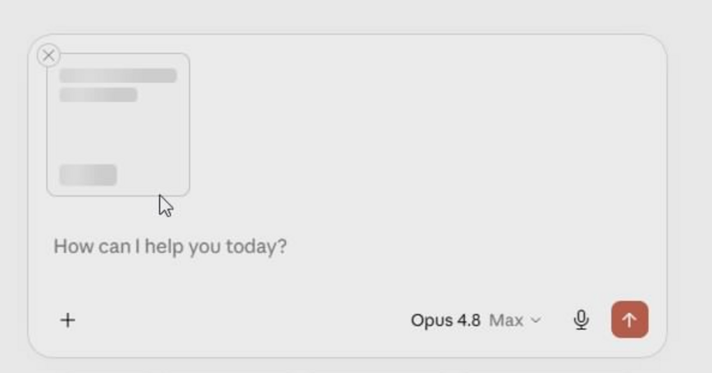
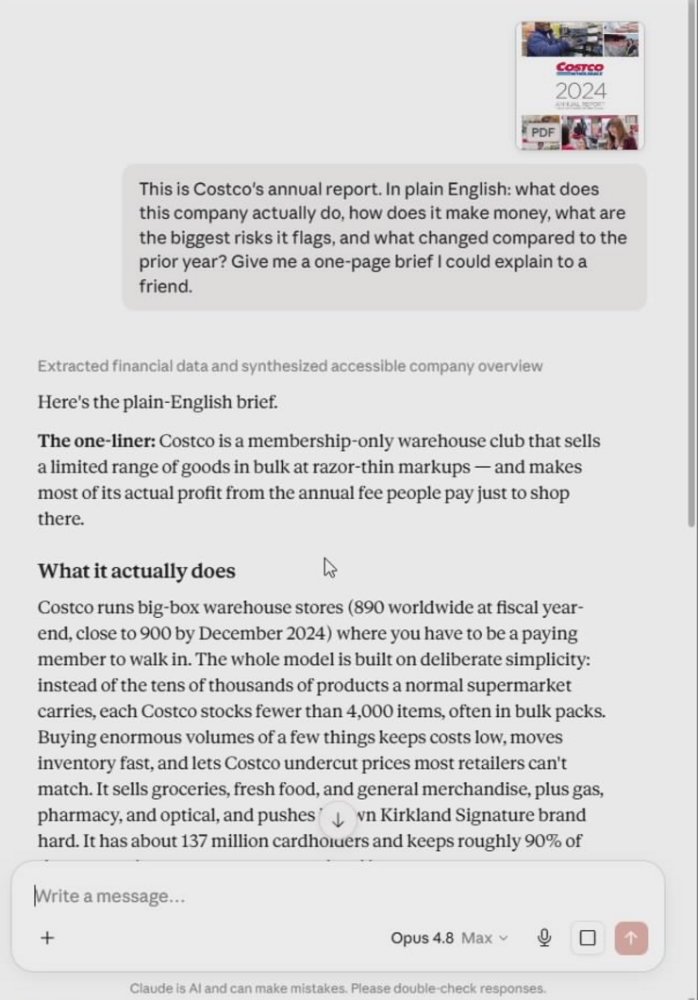

Demo 1 · Chat
Read the unreadable
In 10 minutesA one-page, plain-English brief of Costco's 76-page annual report — the kind of document almost nobody actually reads. Then you'll push back on Claude's first answer, because that's the real skill.
Download the report (PDF, 3 MB)
Steps
- Click the button above. It saves to your Downloads folder. (If the PDF opens in your browser instead, click the download icon at the top-right of the viewer, then click Back.)
- In Claude Desktop, make sure you're on the Chat tab, and start a new chat.
-
Click the + (attach) button and pick
costco-annual-report-2024.pdf— or just drag the file into the window.
The report attached and ready — paste the prompt where it says "How can I help you today?"
-
Paste this prompt and hit Enter:
This is Costco's annual report. In plain English: what does this company actually do, how does it make money, what are the biggest risks it flags, and what changed compared to the prior year? Give me a one-page brief I could explain to a friend.
Give it a minute — Claude reads all 76 pages first, then the brief streams in as it writes, so a slow start is normal. Under two minutes for a report that would take a person hours.

The brief streams in — the copy icon below the reply makes it yours.
The brief is yours to keep — hover over Claude's reply and click the copy icon underneath it, then paste it straight into an email or a Word doc.
Don't take the first answer — push back
This is the part most people skip, and it's where the value is. You bring the judgment; Claude does the reading. Challenge it:
Don't paraphrase the risks — quote the three you think matter most straight from the filing, each with the page it's on, so I can check them myself.
Notice what you just did: you didn't accept a tidy summary on faith, you made Claude show its work against the source. Do that with anything that matters.
Yes, this is allowed — it's your UChicago enterprise account, and the file never leaves the university's workspace. If your own document has regulated data (student records, health information), check UChicago's AI guidance first.
Your turn
Attach the worst PDF in your inbox and adapt the prompt:
This is [what the document is]. In plain English: [your two or three real questions]. Give me [the output you could actually use tomorrow].
Then push back the same way — make it quote the source, or redo the part you don't trust.
When you'd rather hand off the whole task and get back a finished file, that's a Delegate — next page.